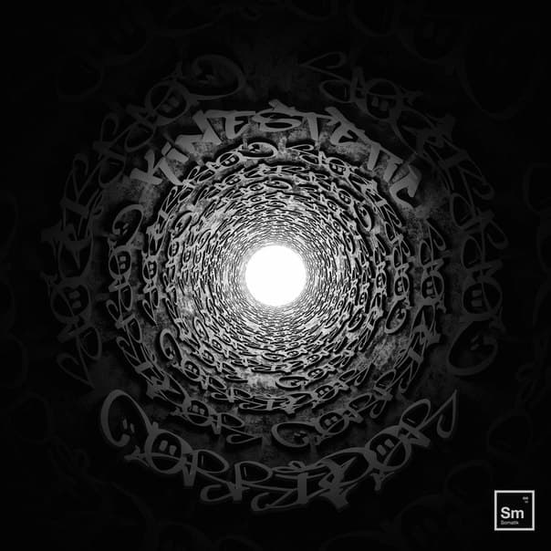

Последний Somatik Релиз Стал Первым для Kinestetic
Дебютный альбом Kinestetic под названием ‘Corridor’, увидел свет 25 января и доступен на всех цифровых платформах.

Новый релиз саунд системы
Kinestetic - Corridor
{kind=link}

Как это часто у нас бывает, артист может играть десятки крышесносных лайвов, постоянно их обновлять и дорабатывать, но при этом не издавать почти совсем ничего. Раньше мы комплексовали на эту тему, но потом пришло понимание – мы процесс, а не продукт. И тем ценнее момент живых выступлений. То что происходит здесь и сейчас.
Кинестетик дебютировал в SSS ровно три года назад и вот наконец мы дождались сольный релиз.Кстати, на подходе ещё один, с чем нас всех и поздравляем.
Закрываем глаза. Делаем громко.
Om WiFi 🙏🏻
Арт на обложке: W0W1988
Группалагерь: https://vk.cc/bXlc2H
Яндекс.Музыка: https://vk.cc/bXlc37
Спотифай: https://vk.cc/bXlc3V
ТыТруба: https://vk.cc/bXlc4E
ЯблокоМузыка: https://vk.cc/bXlc56
snayp
инженер качества
тестирую ПО, на досуге практикую Web технологии и с детства уважаю качественную музыку